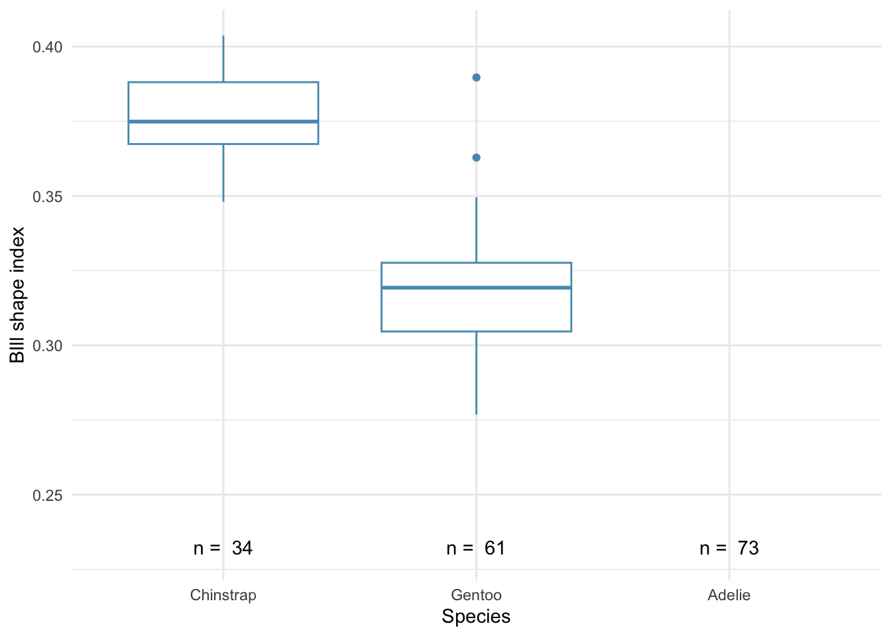
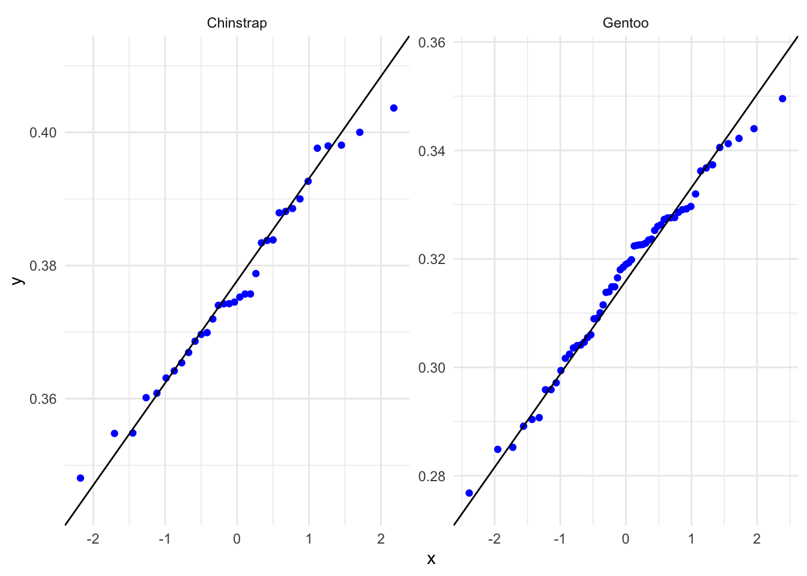
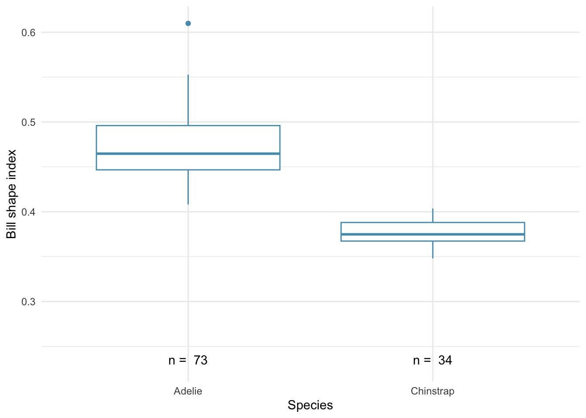
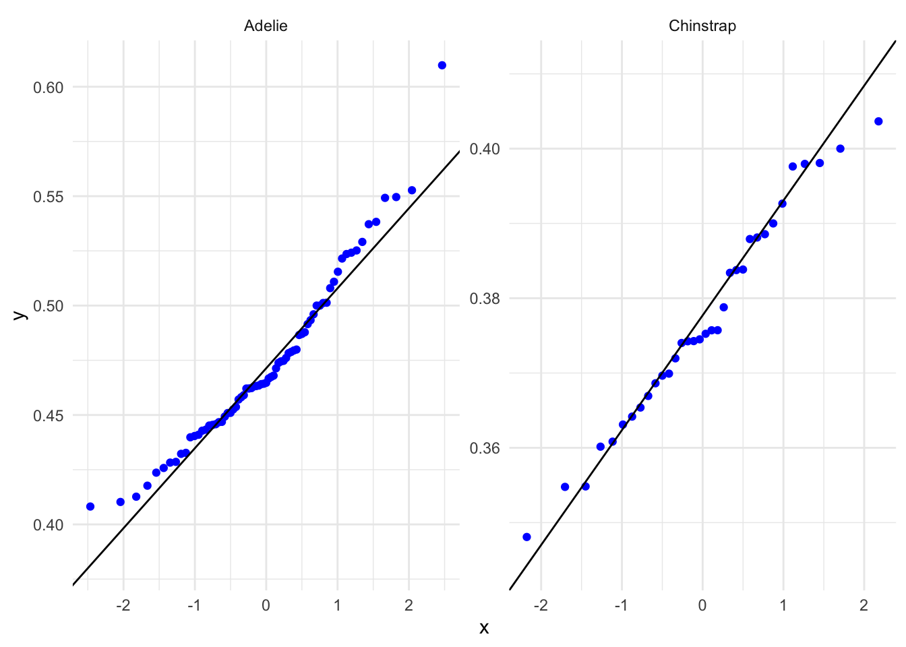

# A tibble: 6 × 8
species island bill_length_mm bill_depth_mm flipper_length_mm body_mass_g
<fct> <fct> <dbl> <dbl> <int> <int>
1 Adelie Torgersen 39.1 18.7 181 3750
2 Adelie Torgersen 39.3 20.6 190 3650
3 Adelie Torgersen 39.2 19.6 195 4675
4 Adelie Torgersen 38.6 21.2 191 3800
5 Adelie Torgersen 34.6 21.1 198 4400
6 Adelie Torgersen 42.5 20.7 197 4500
# ℹ 2 more variables: sex <fct>, year <int>3 Two samples - test for difference
3.1 Penguin data
Suppose we have sampled males from a population of two species of penguin, the Gentoo and the Adelie. All the individuals were found on islands in the Palmer archipelago of Antarctica. We want to know if there are morphologial (shape) differences between these species. If there are, then that might give us some insight as to differences between the ecological niches that the two species occupy.
Here are the first few rows of the data
Let’s create a new variable bill_stocky which is the ratio of the bill depth to the bill lenth. The higher this value is, the shorter and thicker the bill.A stocky bill would likely be more powerful and able to crunch thicker bones in fish.
If we summarise the data by calculating the mean and standard deviation and standard error of the mean stockiness for each species we find:
# A tibble: 2 × 5
species n mean.bill_stocky sd.bill_stocky se.bill_stocky
<fct> <int> <dbl> <dbl> <dbl>
1 Chinstrap 34 0.377 0.0142 0.00244
2 Gentoo 61 0.318 0.0195 0.00250See how big the difference is between the mean values, compared to the standard errors of those means?
Standard deviation and standard error of the mean
standard deviations: These tell us about the spread of values in a sample or a population. They do not systematically get bigger or smaller as the sample size increases. The standard deviation of a sample can be used as an estimate of the standard deviation of the population. We use standard deviations for descriptive purposes
standard errors of the mean These are used to indicate how precisely a sample mean estimates the true population mean. They are used for inferential purposes, whereby we try to infer from the sample mean the range of values in which the true population mean might be. Assuming normally distributed values, it would be very surprising if the true population means were more than two standard errors away from the sample means.
Let’s plot the data, using a box plot:

- On this box plot, identify the 25th, 50th and 75th percentile values for each species.
- Which of these is the median value?
- What do the whiskers represent?
- Are there any outliers?
- Do you think the distributions of the data are roughly symmetrical?
3.2 Statistical test for difference: one factor, two levels
Use the test finder to decide which statistical test for difference might be appropriate.
Note that we have:
- A difference question
- Replicates - there are 34 Chinstrap and 61 Gentoo males
- Independent data - each penguin is either an Adelie or a Chinstrap
- One factor: Species which has two levels: Adelie and Chinstrap. We thus have two samples: the 34 Chinstrap and the 61 Gentoos.
- a continuous reponse variable - bill stockiness.
You should find that the test-finder tells you to use either a 2-sample t-test or a Mann-Whitney U-test. These are both tests for difference where you have two independent samples, each with replicates
You use the t-test if you can because it is more powerful than the Mann Whitney test. This is not surprising because the t-test is an example of a parametric test while the Mann Whitney test is a non-parametric test. In making comparisons between the two sets of data it only looks at their ranks, not their actual values. It thus has thrown away some information.
Note
The terms parametric and non-parametric refer to whether the tests assume that the data used follow some known distribution, usually a normal distribution. These distributions are described by a small number of parameters, hence the names. For a normal distribution, the key parameters that enable it to be drawn are its mean, which tells us where it is centred, and its standard deviation, which tells us how widely spread it is.
In general, parametric tests are preferred to non-parametric tests, but we can only use them if the data do meet the criteria they require, prominent among these being that the data are plausibly drawn from a population with some known distribution, which often means a normal distribution.
Why would it do that? Because to use the t-test the data need to satisfy various criteria. Here we will focus on one: that the data need to be drawn from populations that are normally distributed about their mean values. If this is not at least approximately the case, then we should not use the t-test and should instead use an alternative, which typically is the non-parametric equivalent test, here the Mann Whitney U test. The Mann Whitney test, like other non-parametric tests, uses the ranks of the data instead of their actual values and in this way is not affected by whatever distribution the data may have.
3.3 Testing for normality
You can either:
Plot the data using a box plot If you plot the at using a box plot as we have above, you are looking to see whether the boxes look roughly symmetrical, with the median line roughly in the middle of the box, and no string of outliers heading off to one side or the other. This is because a normay distribution is symmetric, so we should see that at least approximatly in the box plot.
Other plot types that show the distribution of the data can work too, such as a histogram or a violin plot, but a box plot is easy to make and effective.
Plot the data using a quantile-quantile plot
The best plot to use to determine if a data set is plausibly drawn from a normal distribution is a quantile-quantile (QQ) plot. Best of all when the data set is small.
In these, the percentiles of a data set are plotted against the equivalent percentiles of a normal distribution. If the data are roughly normally distributed then the line will be roughly straight.

The line for the Gentoos is not quite straight, but it is not too bad. We don’t mind a bit of raggedness at the ends.
Use a normality test I don’t favour these, especially for large data sets, but if you must use them…
The most commonly used one is the Shapiro-Wilk test. It tests a data set against its null hypothesis that the data were drawn from a normally distributed population. If the returned p-value is higher than 0.05 then we fail to reject this null and can confidently go on to use a parametric test such as a t-test that required normality.
# A tibble: 2 × 4
species variable statistic p
<fct> <chr> <dbl> <dbl>
1 Chinstrap bill_stocky 0.977 0.671
2 Gentoo bill_stocky 0.963 0.0591For these data, both p-values are greater than 0.05 so we do not reject the null: it is plausible that both data sets are drawn from normally distributed populations
So all in all, the graphs looks OK and it looks like the data have passed our normality tests. Hence it is OK to use a t-test for difference and we do not need to use a Mann-Whitneyy test instead.
3.4 The two sample t-test
Th t-test is going to test our data against the null that the two sets are drawn from the same population - that there is no difference in the mean bill stockiness between the species.
On the basis of the summary we made and the box plot, do you think we are going to reject or fail to reject this null?
We can carry out the t-test in R like this
Welch Two Sample t-test
data: bill_stocky by species
t = 17, df = 86, p-value <2e-16
alternative hypothesis: true difference in means between group Chinstrap and group Gentoo is not equal to 0
95 percent confidence interval:
0.0516 0.0655
sample estimates:
mean in group Chinstrap mean in group Gentoo
0.377 0.318 - Is the p value less than 0.05?
- Do we reject the null hypothesis?
- What does the t-value mean?
- What is the 95% confidence interval for the difference between the mean values for each species?
- Is zero within this confidence interval?
Reporting the test We find that the bills of the Chinstrap males are significantly stockier than those of the Gentoo males, as measured by our stockiness index, defined as the ratio of the bill depth to the bill length. (t-test, t = 17, df = 86, p <0.001). The 95% confidence interval for the difference is from 0.052 to 0.065
3.5 Mann-Whitney test for difference - for data that are not normally distributed
What if the data had failed the normality test? That is, what if one or both of the QQ plots had looked distinctly curved, or at least one of the box plots was not at all symmetrical, or the p-values from at least one of the Shapiro-Wilk tests wass less than 0.05? What then?
Well, we shouldn’t use a parametric test like a t-test.
Instead, we could:
- transform the data and make it more normal, often by taking the log of the variable then doing a t-test on that. maybe then we could use the t-test
- Use an equaivalent non-parametric test such a Mann Whitney test.
- Use a fancy generalised linear model.
As an example, let’s do the same test for difference as above, but now compring Adelie males to Chinstrap males.

Note the outlier in the Adelie data set

Note the curvature for the Adelie QQ plot
# A tibble: 2 × 4
species variable statistic p
<fct> <chr> <dbl> <dbl>
1 Adelie bill_stocky 0.954 0.00962
2 Chinstrap bill_stocky 0.977 0.671 The p-value is a lot less than 0.05 for the Adelies.
So, even though the Chinstraps seem OK, the Adelie bills really don’t seem to be normally distributed in terms of their stockiness. This means that we can’t use a parametrioc test such as a t-test to see if their bills are differenlty stocky to the bill of any other species. What we can do is use a non-parametric test, if one exists. In this cae, where we have replicates, and one factor with two levels there is such a test. It is called the Mann Whitney U test. Let’s use it:
Wilcoxon rank sum test with continuity correction
data: bill_stocky by species
W = 2482, p-value <2e-16
alternative hypothesis: true location shift is not equal to 0This tells us that there is evidence of a significant difference between the stockiness of the bills of Adelie males and those of Chinstrap males. (Mann Whitney, W = 2482, p<-.001).
…but we already knew that, from the box plot.